カテゴリ：ブログ作成～公開後～
投稿日：2025年5月11日
前回、ついにブログがネットの海へと旅立ちましたが――ここからが本番です。
ブログというやつは、作って終わりじゃありません。 むしろ「更新してナンボ」の世界。毎回ブラウザからポチポチ手動でファイルをアップロードするのは、 正直……だるい！！（本音）
ということで今回は、**Visual Studio Code＋Git拡張機能**を使って、 「ほぼワンクリックでブログ更新できるようにする」作戦です。
未来の自分にやさしい環境、今のうちに作っておきましょう。
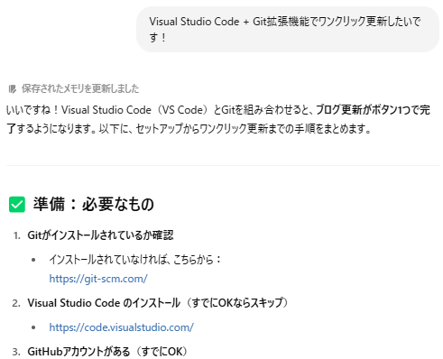VSCとGitHubアカウントは既にあるので、gitをインストールします。
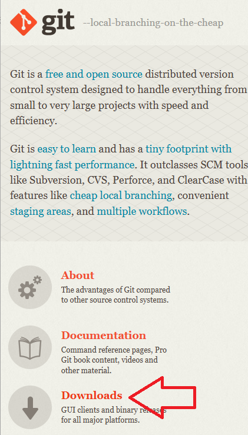ダウンロードしてインストール。
色々聞かれますがChat GPTから指示がないのでデフォルトの選択のままインストール。
普通は調べながらやったほうがいいと思います！
インストール後、VSCを再起動します。
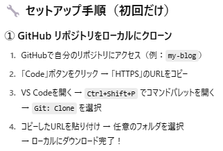 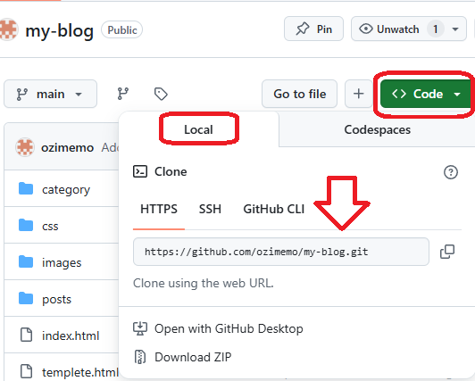Code→Local→にHTTPSのリンクがあるのでこれをコピー。
Ctrl+Shift+Pでコマンドパレットを開いて、
Git: Cloneを選択。するとURLを入力する欄がでるのでそこにペースト。
クローンを作成する場所を聞かれるので、今回はmy-blog内にします。
するとmy-blog内に、GitHub上のmy-blogのクローンが作成されました。
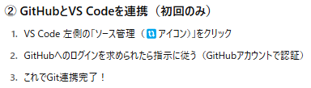GitHubとVS Codeを連携します。
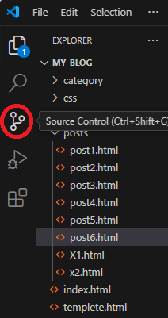VSC左側のSource Controlをクリック。
ログインは求められなかったのでこれで連携できたのかな？
試しに今ローカル上で作成しているpost007.htmlとそれに使用している画像を、クローンフォルダにコピーしてみます。
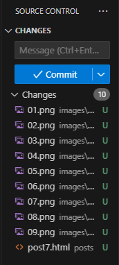すると数秒後に追加したファイルがリストに表示されるので、Commitをクリック。
すると以下のようなエラーメッセージが。
エラーメッセージをChat GPTに聞いてみます。
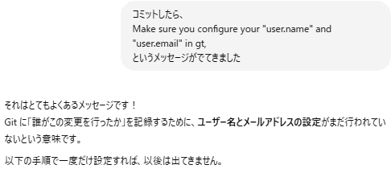なるほど！ユーザー名とメールアドレスを設定する必要があるみたいです。
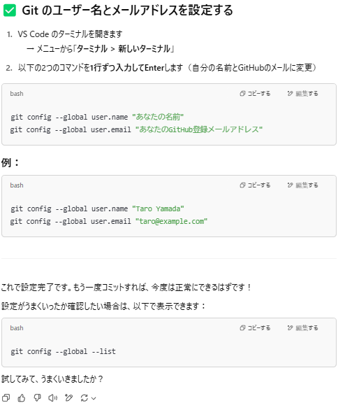 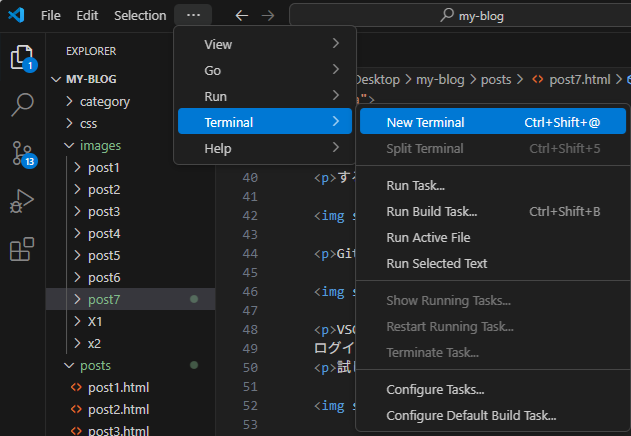New Terminalを選択。するとコマンドプロンプトのような画面が出てくるので、コードをコピー。
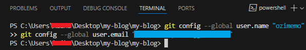水色部分を自分の情報に書き換えて実行。git config --global --listを入力して確認します。
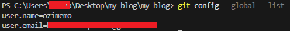無事設定されました！改めて更新してみましょう。
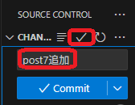追加内容を入力し、チェックマークをクリック。
すると以下のような画面になるので、
Sync Changesをクリック。
Web上で確認してみましょう！
うおおおお！！反映されてるー！！！
これでローカル上で作業した内容がそのまま更新できるようになりましたー！！
今後は作成したクローンフォルダ内で作業すれば、更新があったファイルが自動で検出されるのでボタン一つで更新できますね！
今回はここまで！！
カテゴリ：ブログ作成～公開後～